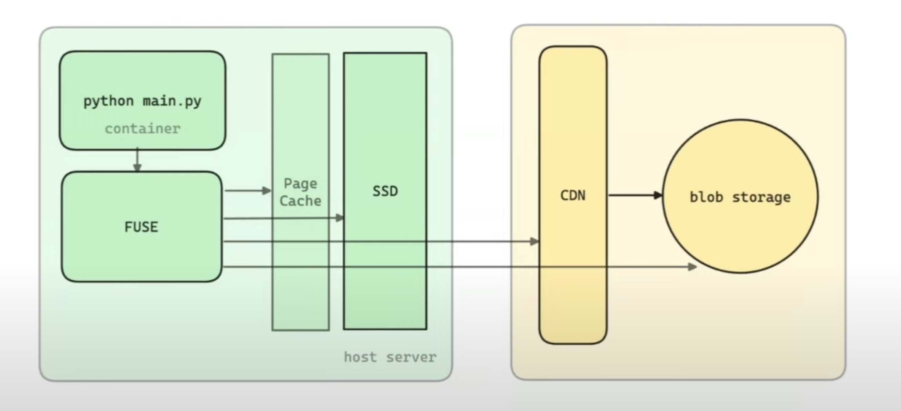

Modal is a serverless cloud GPU service.
The container loading problem
- A usual setup on Modal for some standard ML prediction inference:
- Runtime: Python 3.11 (Fat container, 8 GiB uncompressed)
- Model: Bert (512 MiB .safetensors file)
- You need the container file system for the container to start running. A container filesystem is an overlay mount on the host. An overlay FS mount allows reconcile mutations that happen against a read-only lower directory.
overlay on /mnt/overlay type overlay (
rw,
relatime,
lowerdir=/tmp/tmph45cav46/lower, <- 8GiB uncompressed. read-only
upperdir=/tmp/tmph45cav46/upper, <- mutable, initally empty
workdir=/tmp/tmph45cav46/work
)
Approaches
- Eager
- Used by Docker, K8s
- Loading approach
- Container image is a fat stack of N tarballs (gzipped).
- Each layer is a separate tarball.
- Download N tarballs over the network: concurrent, 2GiB/s. (If host doesn’t already have it )
- Decompress gzipped tarballs: single-threaded, 80MiB/s.
- Unpack into a rootfs directory on host.
- Sidenote: See
/var/lib/containerd/io.containerd.snapshotter.v1.overlayfs/on a K8s node (with containerd runtime).
- Container image is a fat stack of N tarballs (gzipped).
- While getting the tarballs over the network isn’t expensive, they’re usually compressed and decompressing them takes a lot of time. You also need to write the files against the host file system, setting metadata etc. This needs to be done before the container is even started.
- This delay is fine when you’re running a typical K8s cluster with a few applications since the nodes chosen will usually have the container image cached but its quite slow for a server-less platform.
- Lazy
- Used by Modal, AWS Lambda1
- Loading approach
- Container image is an index: ~5MiB, load in 1-100ms.
- Index has only pointers to file contents.
- FUSE mount that index: ~2ms.
lowerdir=/tmp/tmph45cav466/fuse
- FUSE : Filesystem in Userspace
- guest process in user space —filesystem calls like open()—>
FUSE module in kernel space —FUSE message—>
host process —file data—> kernel -> guest process
- guest process in user space —filesystem calls like open()—>
Lazy loading performance problems
| System | Read Latency | Read Throughput | Cost ($USD/GiB/month) |
|---|---|---|---|
| Memory | 1-100 ns | 10-40 GiB/s | $2.0 |
| SSD | 100 µs | 4 GiB/s | $0.10 |
| AZ Cache server | 1 ms | 10 GiB/s | $0.15^ |
| Regional CDN | 100 ms | 3-10 GiB/s | - |
| Blob storage (e.g. S3) | 200 ms | 3-10 GiB/s | $0.015 |
| ^ : significant operation cost | |||
| AZ -> cloud provider availability zone |
This is solvable
- Latency lags bandwidth: bandwidth improves much more quickly than latency.
- Caching works
- While Modal is a general container runtime, its customer base is mostly folks using Python for AI/ML applications.
- There’s a lot of overlap in the files in the container used by different libraries (like pytorch, dreambooth etc.).
- A lot of stuff in a fat image is junk that won’t be used but an eager loading system will always load it.
System Architecture

Performance grind
LLM models have sizes in 10s of GiBs. Modal’s peak bandwidth throughput was 800 MiB/s which wasn’t sufficient. It’s now 2.5 GiB/s.
Host
- Avoid small hosts since cloud providers won’t provide enough bandwidth for IO on SSDs and network.
- You don’t want to be bottlenecked by the network. Network perf >> FUSE perf. Aim for > 4 GiB/s download speeds.
- Avoid single-flow traffic limit & throttling set by cloud provider. Make sure you get the advertised bandwidth.
- You instance might have 20GiB down. but only 5GiB for a single-flow.
- Avoid single-flow traffic limit & throttling set by cloud provider. Make sure you get the advertised bandwidth.
- Stack SSDs together in RAID 0 config (data split across drives)
- RAID 0 improves IO performance since IO is split across those drives and can be done concurrently. A large file can be stored in multiple segments on different drives and read back much faster.
- We don’t need durability here since the origin of the data is the blob store.
- Modal uses AWS g5.12xlarge (5 GiB/s, 3.8TiB NVMe SSD)
FUSE
- Peak read() throughput was around 800 MiB/s. Lags far behind NVMe and network throughput.
- Now at 2.5 GiB/s.
- Focus on large-file throughput, not op latency.
- Increasing read_ahead
- read_ahead allows kernel to request future pages when it receives request for a particular page
- Originally at 128KiB, now set at 32MiB.
- We can’t keep increasing it forever. The kernel will end up reading a lot of data for a single read-request and in turn increase latency.
- Increasing READ request size (FUSE max_pages)
- Each READ request from Kernel to the userspace FUSE server has a size. Larger request sizes, fewer trips into user space.
- Originally at 128KiB, now at 32MiB.
- Without direct IO, couldn’t go above 1MiB. ???
- No page cache if using direct IO.
- Tune FUSE’s congestion threshold and background threads
- The FUSE system in the kernel is going to fulfill the IO requests either on an synchronous path or in background. Read requests are buffered. Modal is only using a read-only filesystem so they want to make the background queues as large as possible to avoid throttling the guest processes.
- congestion_threshold -> was 9, now 256.
- max_background: was 12, now 256.
- Other suggestions
- Don’t blow up the heap.
- Having a large heap was dropping their throughput and reducing the heap size while they were pulling through the large files was improving their throughput.
- The large heap was leading to more page faults for their workload.
- When you issue a read to Modal and it goes over the network, they want to keep the returned data into disk and the page cache so that any subsequent reads are served from the disk or page cache.
- They were keeping the data in memory in order to write to the disk and blowing up their memory usage.
- They now defer writes, keep the heap small, stream data from network to guest process without holding it in memory.
- This increased throughput by 100-200 MiB/s.
- Having a large heap was dropping their throughput and reducing the heap size while they were pulling through the large files was improving their throughput.
- Balance disk cache write priority against read priority.
- Don’t blow up the heap.
- Also see
512 MiB .safetensors file loads in 200ms from disk cache, ~300ms from network.
Q/A
- How do you defer disk-writing without blowing up the heap or creating a bottleneck on IO write perf of the SSD?
- Keep a reference to data-chunk on the blob store and fetch it later. (Blob stores allow referring to ranges of data) and free the memory occupied by the data chunk.
- Do you have to worry about data corruption in the read requests or mis-directed reads?
- We check a lot on the write path. We check length and digests on the read path. We’re able to detect corruption on the disks and fix it.
- Did you ever run into problems where a workload caused latency issues?
- Latency is still a bottleneck even for the usual workload. Cold start performance is the most important part.
- We’re trying to avoid trips into the user-space from the kernel. We’re thinking of using things like EROFS which you load inside the kernel and avoids the trip to user-space.
- We also run a user-space kernel called gVisor which adds additional slowness.
- The Python interpreter requests files/modules one by one. How do you deal with that?
- Earlier, this was mitigated by the AZ cache which we used to be much more invested in.
- Now divested from the AZ cache. We focus more on regional and origin store.
- We do a thing called task profiling where we see what the process has done, record that and then aggressively pre-load before the container even starts up. If we’ve never seen that container before, we rely on a certain heuristics (eg. what’s a python process going to want, what’s a ML python process going to want).
- Could you use io_uring to improve performance?
- We haven’t explored using it yet but it sounds interesting.
Other things
- Fast container image distribution plugin with lazy pulling
- Blog: https://modal.com/blog/jono-containers-talk